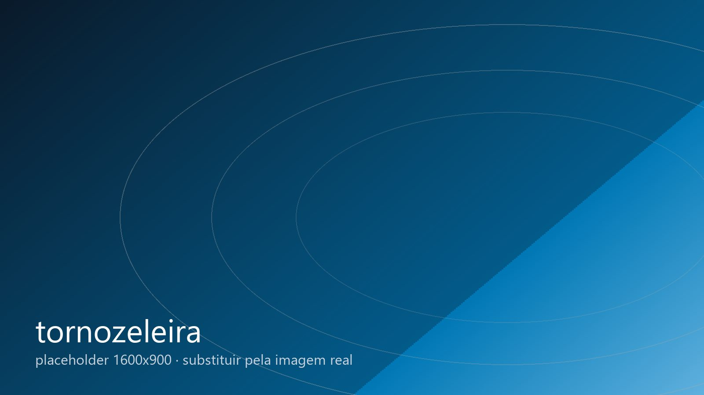

Tecnologia · monitoramento eletrônico de pessoas
Monitoramento eletrônico de pessoas, produzido no Brasil desde 2007.
Em 2007 a Insiel se tornou a primeira empresa brasileira a produzir tornozeleiras eletrônicas. Desde então, sistemas da Insiel foram implantados em diversos estados.

Pioneirismo
Engenharia nacional, desde o projeto da placa.
A tornozeleira da Insiel foi concebida, projetada e produzida em Campina Grande. Isso significa domínio completo do hardware, do firmware e da plataforma, e capacidade de evoluir o produto conforme a necessidade de cada órgão.
- Primeira tornozeleira eletrônica produzida no Brasil (2007).
- Sistemas implantados em diversos estados brasileiros. [PREENCHER estados, se autorizado]
- Fornecedor com quase três décadas de operação contínua.
Como funciona
Três partes que trabalham juntas.
Dispositivo
Tornozeleira com localização, detecção de violação e comunicação com a plataforma. Projetada para uso contínuo e resistência ao dia a dia.
Plataforma
Software que cadastra as pessoas monitoradas, define áreas e horários permitidos, recebe as posições e gera os alertas e relatórios.
Central de monitoramento
Operadores acompanham os alertas em tempo real e seguem os procedimentos definidos pelo órgão responsável.
Confiabilidade
O que importa em uma compra pública.
Integridade dos dados
Registro de posições e eventos com rastreabilidade.
Operação contínua
Central e plataforma projetadas para funcionamento 24 horas.
Suporte do fabricante
Quem produz o equipamento é quem dá o suporte.
Documentação
Apoio técnico ao processo de contratação e implantação.
Apresentação técnica
Solicite uma apresentação para o seu órgão.
Preencha os dados e a área de projetos da Insiel entra em contato para agendar a apresentação técnica, presencial ou remota.